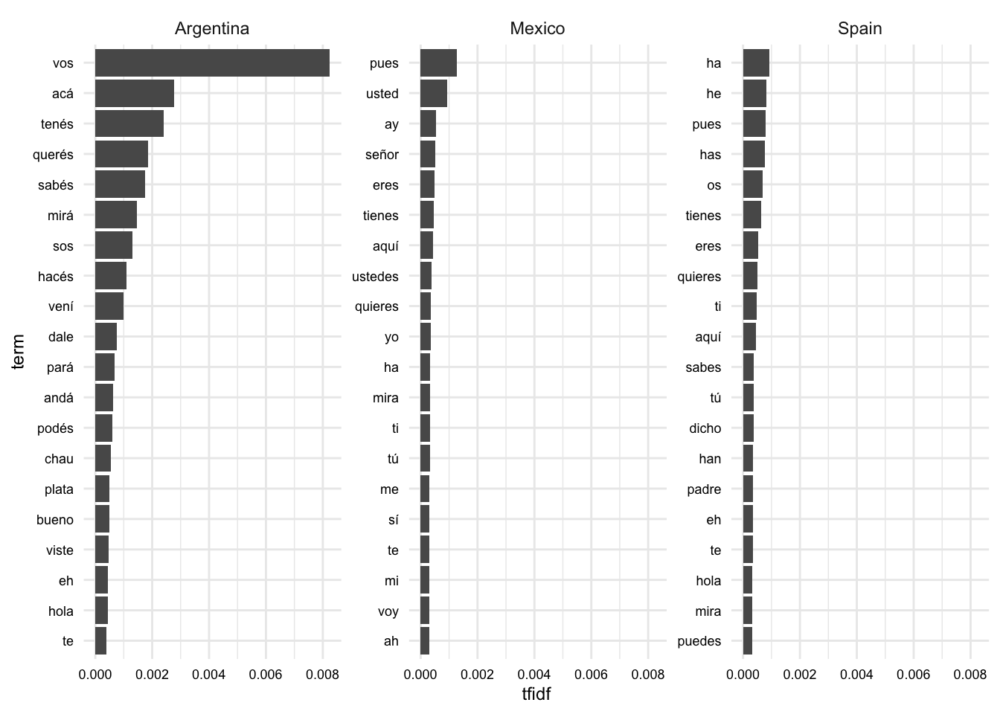
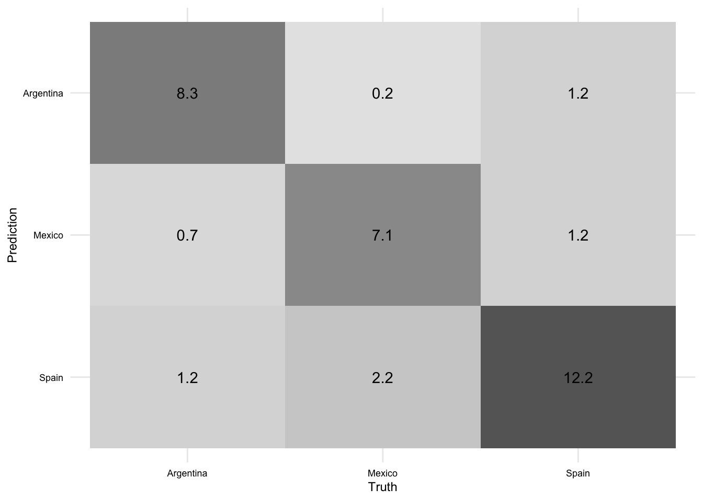
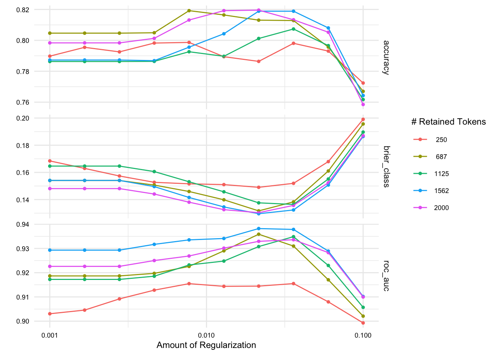
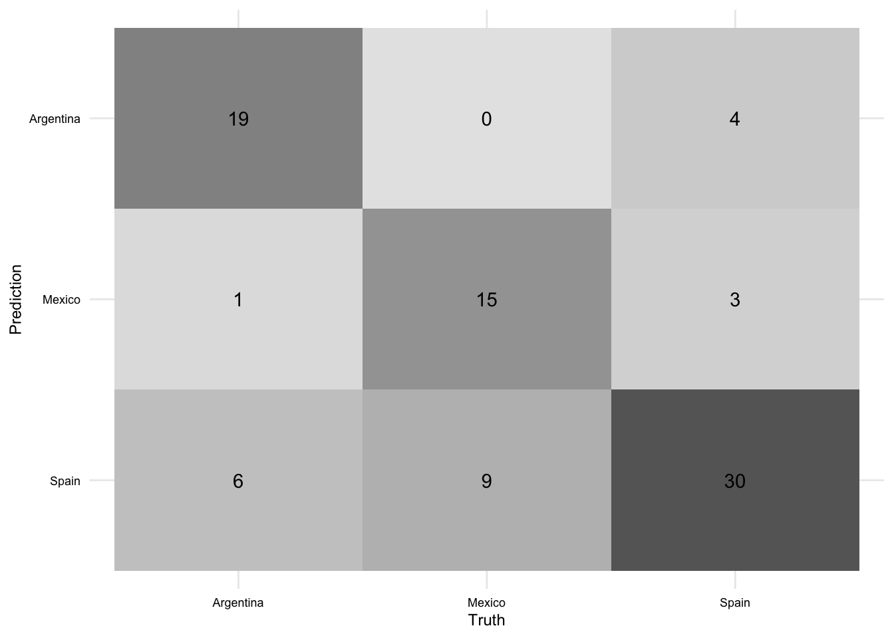
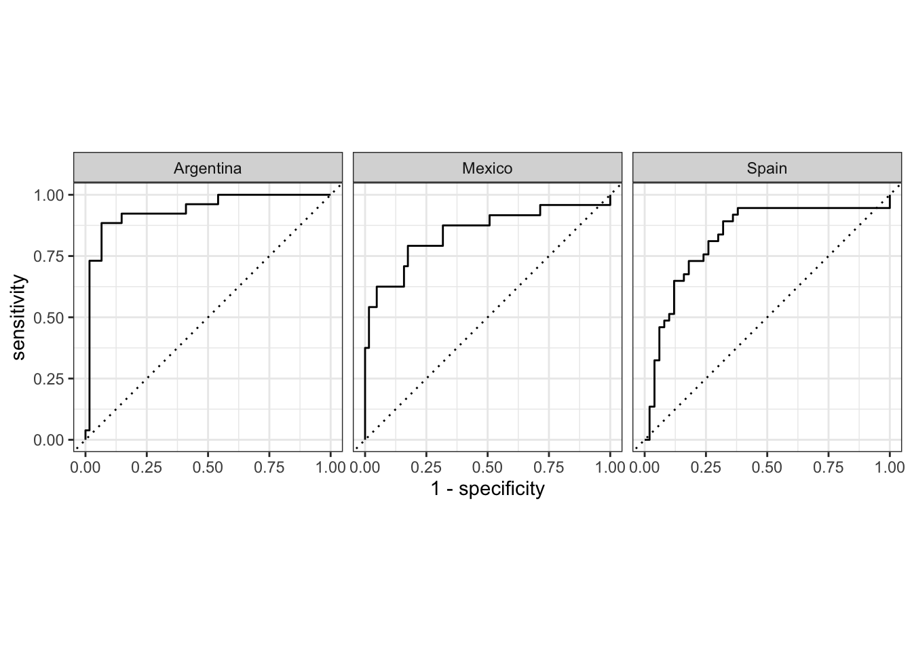
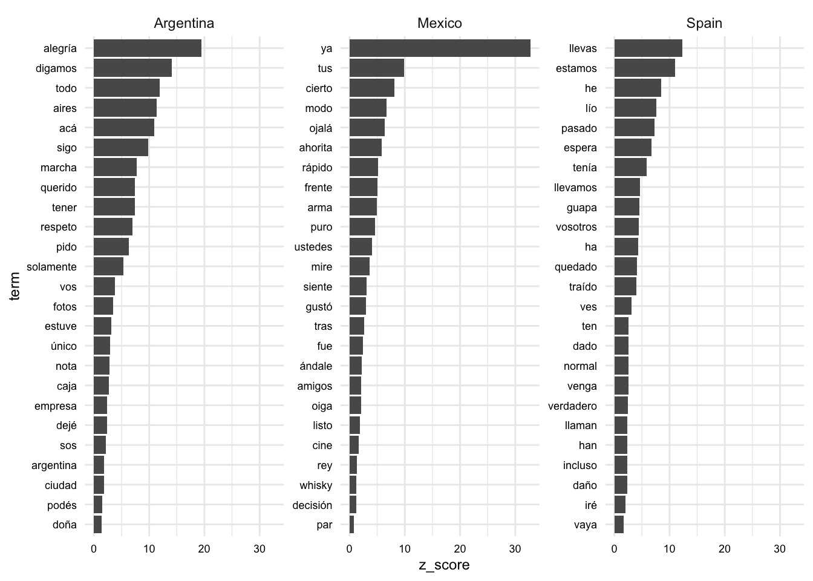

library(tidymodels) # for modeling
library(textrecipes) # for text preprocessing
library(dplyr) # for data manipulation
library(tidyr) # for data manipulation
library(stringr) # for string manipulation
library(tidytext) # for text manipulation
library(ggplot2) # for visualization
library(janitor) # for tabyl()
tidymodels_prefer() # avoid function name conflicts09. Building predictive models
Supervised machine learning
analysis
This recipe will cover the process of building a predictive model to classify text into one of three Spanish dialects: Argentinian, Mexican, or Spanish. We will take a step-by-step approach that includes data preparation, model training and evaluation, and result interpretation. We will see practical examples of how to apply the {tidymodels} framework to build and evaluate a predictive model.
The workflow for building a predictive model is shown in Table 1. Note that Step 6 includes an optional step to iterate on the model to improve performance. This is optional because it is not always necessary to iterate on the model. However, it is often the case that the first model you build is not the best model. So it is good to be prepared to iterate on the model.
| Step | Name | Description |
|---|---|---|
| 1 | Identify | Consider the research question and aim and identify relevant variables |
| 2 | Split the data into representative training and testing sets | |
| 3 | Apply variable selection and engineering procedures | |
| 4 | Inspect | Inspect the data to ensure that it is in the correct format and that the training and testing sets are representative of the data |
| 5 | Interrogate | Train and evaluate the model on the training set, adjusting models or hyperparameters as needed, to produce a final model |
| 6 | (Optional) Iterate | Repeat steps 3-5 to selecting new variables, models, hyperparameters |
| 7 | Interpret | Interpret the results of the final model in light of the research question or hypothesis |
Let’s get started by loading some of the key packages we will use in this recipe.
Concepts and strategies
Orientation
We will use the ACTIV-ES corpus to build a predictive model that can classify text as one of three dialects of Spanish: Argentinian, Mexican, or Spanish. We will frame this as a supervised learning problem, where we have a set of texts that have been labeled with the dialect of Spanish that they are written in. In contrast to the classification task in the chapter, which was binary, this is a multiclass classification task, where we are trying to classify each document as one of three classes.
Let’s preview the structure of the ACTIVES dataset.
aes_df# # A tibble: 430 × 3
# doc_id variety text
# <dbl> <fct> <chr>
# 1 199500 Argentina No está , señora . Aquí tampoco . No aparece , señora . ¿ D…
# 2 184782 Argentina ALGUIEN AL TELÉFONO . LA ANGUSTIA . Ah , no , no , no mi hi…
# 3 47823 Argentina Habrá que cumplir su última voluntad , ¿ el medallón ? Lo v…
# 4 282622 Argentina Sucedió en Hualfin Esta es la historia de tres generaciones…
# 5 62433 Argentina 10 secuestros en 10 días ! Y no hay el menor índice . Bueno…
# 6 70250 Argentina Y preguntada que fue sí reconocen el cadáver exhumado ... y…
# 7 71897 Argentina ¡ Jeremías ! ¡ Jeremías ! ¡ No dejés parir a tu mujer ! Sei…
# 8 333883 Argentina Usted . Usted que frecuenta el éxito como una costumbre más…
# 9 333954 Argentina Miles de campanas nos traen , a través de los siglos , el t…
# 10 175243 Argentina Y ? Enseguida viene , fue al baño . Bueno , pero la mesa la…
# # ℹ 420 more rowsThis dataset contains 430 documents, each of which is labeled with the variety of Spanish that it is written in and the text of the document. A document ID is also included, which we will be able to use to index the documents. The variety vector is a factor. As this will be the outcome variable in our predictive model, this is good as most predictive models require classification variables to be factors.
Let’s get a sense of the distribution of the variety variable.
aes_df |>
tabyl(variety) |>
adorn_pct_formatting(digits = 1) variety n percent
Argentina 128 29.8%
Mexico 119 27.7%
Spain 183 42.6%We can see that the dataset is somewhat balanced, with Peninsular Spanish comprising the larger portion of the texts.
Analysis
At this point we can start to approach building a predictive model that can distinguish between the Spanish varieties using the text. We will first start by applying steps 1 and 2 of the workflow. We will then apply steps 3-5 iteratively to build, evaluate, and improve the model, as necessary, before applying it to the test data to assess and interpret the results.
Let’s go ahead and perform steps 1 and 2. To split the data into training and testing sets, we will use {rsample}. The initial_split() function, sets up the splits and we use variety as the stratification variable to ensure that the training and testing sets are representative of the distribution of the outcome variable. As this process is random, we will set the seed for reproducibility. Finally, we call the training() and testing() functions to extract the training and testing sets.
# Set the seed for reproducibility
set.seed(1234)
# Split the data into training and testing sets
aes_split <-
initial_split(
data = aes_df,
prop = 0.8,
strata = variety
)
aes_train <- training(aes_split) # extract the training set
aes_test <- testing(aes_split) # extract the testing setWe will then set the base recipe which formally identifies the relationship between the predictor and outcome variables. The recipe() function from {recipes} is used to create a recipe.
# Set the base recipe
aes_base_rec <-
recipe(
formula = variety ~ text,
data = aes_train
)We now have steps 1 and 2 of the workflow completed. We have identified the variables of interest and split the data into training and testing sets.
One more thing we will do here is to set up the cross-validation folds. Every time we fit a model to the training data, we will want to evaluate the model’s performance on the training data. However, we don’t want to do this in a way that is biased –testing the model on the same data that it was trained on! For this reason, we will use cross-validation to split the training data into multiple training and validation sets which represent different splits of the training data.
We will use the vfold_cv() function from {rsample} to set up the cross-validation folds. We will use 10 folds, which is a common number of folds to use. We will also use the strata argument to ensure that the folds are representative of the distribution of the outcome variable.
# Set seed for reproducibility
set.seed(1234)
# Set up the cross-validation folds
cv_folds <-
vfold_cv(
data = aes_train,
v = 10,
strata = variety
)With these common steps completed, we can now apply and reapply steps 3-5 of the workflow to build, evaluate, and improve the model.
Approach 1
In our first approach, let’s start simple by using words as features and apply a logistic regression model. We won’t be completely naive, however, as we are familiar with the undo influence of the most frequent words. To address this, we will apply a term frequency-inverse document frequency (TF-IDF) transformation to the text in order to downweight the influence of the most frequent words and promote words that are more indicative of each class. Furthermore, we know that we will want to use a regularized regression model to avoid overfitting to particular words.
To get started, we will use {textrecipes} to add steps to our aes_base_rec recipe to preprocess the text. We will use the step_tokenize() function to tokenize the text. This tokenization process will likely result in a very large number of terms, most of which will not be informative and will add computational overhead. We will want to restrict the number of terms with the step_tokenfilter() function. However, it is not clear how many terms we should restrict the tokens to. For now, we will start with 1,000 tokens, but we will likely want to revisit this later. We will also use the step_tfidf() function to apply a TF-IDF transformation to the text setting smooth_idf to FALSE.
# Add preprocessing steps to the recipe
aes_rec <-
aes_base_rec |>
step_tokenize(text) |>
step_tokenfilter(text, max_tokens = 1000) |>
step_tfidf(text, smooth_idf = FALSE)
# Preview the recipe
aes_recTo implement the recipe and to preview the text preprocessing steps we apply the prep() and bake() functions.
aes_bake <-
aes_rec |>
prep() |>
bake(new_data = NULL)
# Preview
dim(aes_bake)[1] 343 1001aes_bake[1:5, 1:5]# A tibble: 5 × 5
variety tfidf_text_1 tfidf_text_10 tfidf_text_15 tfidf_text_2
<fct> <dbl> <dbl> <dbl> <dbl>
1 Argentina 0.000206 0.000599 0.000402 0
2 Argentina 0 0 0 0
3 Argentina 0 0.0000887 0 0
4 Argentina 0.00437 0 0.00142 0.00381
5 Argentina 0 0.00155 0 0.00124We now have a recipe that will tokenize the text, restrict the tokens to the most common 1,000 tokens, and create a TF-IDF matrix.
It is not a bad idea to inspect the features at this point to make sure that the preprocessing steps have been applied correctly and to gauge what this feature selection looks like so that when it comes time to interpret the model, we have a sense of what the model is doing.
As TF-IDF is going to be the main feature in our model, let’s visualize the top 20 terms by class. To do this, we will use {dplyr} to get the median TF-IDF score for each word by class, convert the data from wide to long format using the pivot_longer() function, and then use {ggplot2} to visualize the data.
# Sum the term frequencies by class
class_freq_wide <-
aes_bake |>
group_by(variety) |>
summarize(
across(
starts_with("tfidf_"),
median
)
) |>
ungroup()
# Convert the data from wide to long format
class_freq_long <-
class_freq_wide |>
pivot_longer(
cols = starts_with("tfidf_"),
names_to = "term",
values_to = "tfidf"
) |>
mutate(term = str_remove(term, "tfidf_text_"))
# Visualize the top 20 terms by class
class_freq_long |>
slice_max(n = 20, order_by = tfidf, by = variety) |>
mutate(term = reorder_within(term, tfidf, variety)) |>
ggplot(aes(x = term, y = tfidf)) +
geom_col() +
scale_x_reordered() +
facet_wrap(~variety, scales = "free_y") +
coord_flip()

In Figure 1, we see the words that are most indicative of each language variety. If you are familiar with Spanish, you can probably detect some variety-specific terms. For example, “vos” is a pronoun used in Argentinian Spanish and “os” is a pronoun used in Peninsular Spanish. There is also some overlap between the varieties, such as “tienes” and “te”.
Another point to note is the difference in magnitude of the TF-IDF scores between the Argentinian and other varieties. This suggests that the Argentinian variety is more distinct from the other varieties than the other varieties are from each other. Among the most distinctive terms are verbal forms that are specific to Argentinian Spanish, such as “tenés” and “sos”.
Now let’s create a model specification. We will use the multinom_reg() function from {parsnip} to create a multinomial logistic regression model, as we have multiple classes in our prediction task. We will use the “glmnet” engine, which will allow us to apply regularization to the model, arbitrarily set to 0.01. We will use the set_engine() function to set the engine and the set_mode() function to set the mode to “classification”.
# Create a model specification
aes_spec <-
multinom_reg(
penalty = 0.01,
mixture = 1
) |>
set_engine("glmnet") |>
set_mode("classification")To combine the recipe and the model specification, we will use {workflows}. We will use the workflow() function and pass add_recipe(aes_rec) and add_model(aes_spec) as arguments to add the recipe and the model specification to the workflow.
# Create a workflow
aes_wf <-
workflow() |>
add_recipe(aes_rec) |>
add_model(aes_spec)We can now use the cross-validation folds that we set up earlier. We will use the fit_resamples() function to fit the model to the training data using the cross-validation folds.
# Fit the model to the training data
aes_train_fit <-
aes_wf |>
fit_resamples(
resamples = cv_folds,
control = control_resamples(save_pred = TRUE)
)We can now evaluate the model’s performance on the training data. We will use the collect_metrics() function to collect the metrics from the cross-validation folds.
# Evaluate the model's performance on the training data
aes_train_fit |>
collect_metrics()# A tibble: 3 × 6
.metric .estimator mean n std_err .config
<chr> <chr> <dbl> <int> <dbl> <chr>
1 accuracy multiclass 0.804 10 0.0210 Preprocessor1_Model1
2 brier_class multiclass 0.147 10 0.0130 Preprocessor1_Model1
3 roc_auc hand_till 0.923 10 0.0109 Preprocessor1_Model1We can see that the model has a mean accuracy of 80.4% and ROC-AUC of 14.7%. That pretty good for a first pass. To get a sense of how good (or bad) it is, let’s compare it to a baseline model.
A baseline model is the simplest model that we can use to compare the performance of our model to. A common baseline model is a model that always predicts the most frequent class. In our case, this is Peninsular Spanish, which accounts for 42.6% of the data. So it is clear that our model is doing much better than a baseline model which will have an accuracy score of 42.6%.
We can visualize the correct and incorrect predictions using a confusion matrix. We will use the conf_mat_resampled() function from {yardstick} to create the confusion matrix and the autoplot() function from {ggfortify} to visualize it.
aes_train_fit |>
conf_mat_resampled(tidy = FALSE) |>
autoplot(type = "heatmap")

The left-downward diagonal of the confusion matrix represents the average number of documents correctly predicted for the aggregated model across the cross-validation folds. Other cells represent the average number of documents incorrectly predicted for each class-class combination. You can read these by using the row label to identify the predicted class and the column label to identify the actual class. So, for example, the model predicted Mexico \(n\) times when the actual class was Argentina. And so on.
Approach 2
In our first approach we applied a TF-IDF transformation to the text and used a regularized multinomial logistic regression model. We also restricted the tokens to the 1,000 most frequent tokens and arbitrarily set the regularization parameter to 0.01. This resulted in an aggregate accuracy score of 80.4% on the training data. This is a good start, but see if we can do better.
In this second approach, let’s try to improve the model by applying a more principled approach to feature and hyperparameter selection.
To do this we will ‘tune’ the max_tokens and penalty hyperparameters in our recipe and model specifications, respectively. We need to update our recipe and model specification to include placeholders for these parameters replacing the previous values with tune(). We will also need to update our workflow to include the updated recipe and model specification.
# Update the recipe
aes_rec <-
aes_base_rec |>
step_tokenize(text) |>
step_tokenfilter(text, max_tokens = tune()) |> # adds placeholder
step_tfidf(text, smooth_idf = FALSE)
# Update the model specification
aes_spec <-
multinom_reg(
penalty = tune(), # adds placeholder
mixture = 1
) |>
set_engine("glmnet") |>
set_mode("classification")We can now create a workflow that includes the recipe and the model specification.
# Create a workflow
aes_wf <-
workflow() |>
add_recipe(aes_rec) |>
add_model(aes_spec)Now we set up the range of values for both the max_tokens and penalty hyperparameters. The grid_regular() function from {dials} will allow us to specify a grid of values for each hyperparameter.
# Set the hyperparameter grid
aes_grid <-
grid_regular(
max_tokens(range = c(250, 2000)),
penalty(range = c(-3, -1)),
levels = c(max_tokens = 5, penalty = 10)
)
aes_grid# A tibble: 50 × 2
max_tokens penalty
<int> <dbl>
1 250 0.001
2 687 0.001
3 1125 0.001
4 1562 0.001
5 2000 0.001
6 250 0.00167
7 687 0.00167
8 1125 0.00167
9 1562 0.00167
10 2000 0.00167
# ℹ 40 more rowsThe range = argument specifies the range of values to include in the grid. For max_tokens, this is straightforward. For penalty, we are specifying the range of values on the log scale. So the range of values is 0.001 to 0.1. The levels argument specifies the number of values to include in the grid. In this case, we will include 5 values for max_tokens and 10 values for penalty. This will result in 50 combinations of hyperparameter values.
We will then pass our aes_wf workflow to the tune_grid() function with the grid values we specified to tune the hyperparameters.
# Tune the hyperparameters
aes_tune <-
aes_wf |>
tune_grid(
resamples = cv_folds,
grid = aes_grid,
control = control_resamples(save_pred = TRUE)
)The aes_grid object is a tibble which contains the grid all the combinations of hyperparameter values. In this case, there are 50 combinations. That means we are going to fit 50 models to the training data! This is a lot of models, but it is worth it to get a more robust estimate of the model’s performance.
We can use the collect_metrics() function to collect the metrics from the cross-validation folds for each of our tuning parameters, but this will result in a lot of output. Instead, we can use the autoplot() function to visualize the metrics.
# Plot the collected metrics
aes_tune |> autoplot()

We see some variation across the folds in the accuracy and ROC-AUC scores. This will help us make a more informed decision about which hyperparameters to use.
The metric to use to select the best model is something to consider.Accuracy is an important measure, but does not tell the whole story. In particular, accuracy does not tell us how well the model is doing for each class –only the overall correct and incorrect predictions. To get a better sense of how the model is doing across the classes, we can pay attention to the ROC-AUC score. The ROC-AUC score is a measure of the area under the receiver operating characteristic (ROC) curve. The ROC curve plots the true positive rate (TPR) against the false positive rate (FPR) for each class at different probability thresholds. This measure is useful because it is not affected by class imbalance.
Let’s select the best model based on the ROC-AUC score.
# Get the best model
aes_tune_best <-
aes_tune |>
select_best(metric = "roc_auc")
aes_tune_best# A tibble: 1 × 3
penalty max_tokens .config
<dbl> <int> <chr>
1 0.0215 1562 Preprocessor4_Model07We can now update our workflow with the best hyperparameters.
# Update the workflow
aes_wf <-
aes_wf |>
finalize_workflow(aes_tune_best)
aes_wf══ Workflow ════════════════════════════════════════════════════════════════════
Preprocessor: Recipe
Model: multinom_reg()
── Preprocessor ────────────────────────────────────────────────────────────────
3 Recipe Steps
• step_tokenize()
• step_tokenfilter()
• step_tfidf()
── Model ───────────────────────────────────────────────────────────────────────
Multinomial Regression Model Specification (classification)
Main Arguments:
penalty = 0.0215443469003188
mixture = 1
Computational engine: glmnet We can now see that the updated workflow will replace the tune() placeholders with the best hyperparameters we selected.
Let’s again perform a resampled fit on the training data using our new tuned model and then compare our results with the previous, abritrarily tuned model.
# Fit the model to the training data
aes_train_fit <-
aes_wf |>
fit_resamples(
resamples = cv_folds,
control = control_resamples(save_pred = TRUE)
)
# Evaluate the model's performance on the training data
aes_train_fit |>
collect_metrics()# A tibble: 3 × 6
.metric .estimator mean n std_err .config
<chr> <chr> <dbl> <int> <dbl> <chr>
1 accuracy multiclass 0.819 10 0.0135 Preprocessor1_Model1
2 brier_class multiclass 0.130 10 0.0101 Preprocessor1_Model1
3 roc_auc hand_till 0.938 10 0.0104 Preprocessor1_Model1The accuracy score has improved just a bit, from an aggregate score of 80.4% to 81.9%.
In all likelihood, we would want to continue to iterate on this model, applying different feature selection and engineering procedures, different models, and different hyperparameters –I will consider some suggestions in the next section. However, for the sake of time, we will stop here and train our final model on the training data and then apply the model to the test data to assess and interpret the results.
Interpreting the model
At this stage we are ready to interpret the model. We first fit the model to the training data, then apply the model to the test data, and evaluate the model’s performance on the test data. Finally, we will dig into the model to interpret the importance of the features to help us understand what the model is doing and what it can tell us about words that are indicative, or not, of each variety.
Let’s fit our final model to the training data and evaluate it on the testing data using the last_fit() function which takes our updated workflow and the original split we created earlier which is stored in aes_split.
# Fit the final model
aes_final_fit <- last_fit(aes_wf, aes_split)We can now collect the performance metrics from the testing data.
# Get the performance metrics
aes_final_fit |>
collect_metrics()# A tibble: 3 × 4
.metric .estimator .estimate .config
<chr> <chr> <dbl> <chr>
1 accuracy multiclass 0.736 Preprocessor1_Model1
2 roc_auc hand_till 0.872 Preprocessor1_Model1
3 brier_class multiclass 0.180 Preprocessor1_Model1The accuracy of this model on the test data is 73.6%. This is lower than the accuracy on the training data. Should we be surprised? Not really. The model was trained on the training data, so it is not surprising that it would perform better on the training data than the test data, despite the fact that we used cross-validation to evaluate the model on the training data. This is a good reminder that the model is not perfect and that we should not expect it to be.
What does the ‘kap’ metric mean? The Kappa statistic is a measure of agreement between the predicted and actual classes. It is a measure of agreement that is corrected for the possibility that some correct prediction may have occurred by chance. The kappa statistic ranges from 0 to 1, with 0 indicating no agreement above chance and 1 indicating perfect agreement. In this case, the kappa statistic is 87.2%, which indicates that there is a moderate amount of agreement between the predicted and actual classes.
Let’s explore if there is a difference in performance across the classes. To do this, we will use the conf_mat() function from {yardstick} to create the confusion matrix and the autoplot() function from {ggfortify} to visualize it.
aes_final_fit |>
collect_predictions() |>
conf_mat(truth = variety, estimate = .pred_class) |>
autoplot(type = "heatmap")

We can see that the model is doing a good job of predicting Peninsular Spanish, but is not doing as well with the other varieties. This is not surprising given that Peninsular Spanish is the most frequent class in the data. This is a good reminder that accuracy is not the only metric to consider when evaluating a model. We can get a better sense of how the model is doing across the classes by looking at the ROC-AUC score.
# Get the ROC-AUC score
aes_final_fit |>
collect_predictions() |>
roc_curve(truth = variety, .pred_Argentina:.pred_Spain) |>
autoplot()

Taken together, we have a decent model that can predict the variety of Spanish that a text is written in. We can also see that although prediction accuracy appears higher for Peninsular Spanish, the ROC-AUC curves suggest that the model is doing a better job of predicting the other varieties based on the features.
There is still room for improvement –as we recognized earlier. However, it is important that we do not start to use the testing data to improve the model. The testing data should only be used to evaluate the model. If we start to use the testing data to improve the model, we will no longer have an unbiased estimate of the model’s performance.
Let’s now dig into our model’s features to explore what words are driving the model’s predictions. The approach to do this will depend on the model. In this case, we used a multinomial logistic regression model, which is a linear model. This means that we can interpret the model’s coefficients to understand the importance of the features. Coefficients that are positive indicate that the feature is associated with the reference class and coefficients that are negative indicate that the feature is associated with the non-reference class. For classification tasks with two classes, this is straightforward to interpret.
The issue here, however, is that we have more than two classes (i.e., Argentina, Mexico, and Spain). In these cases, the coefficients estimates for each class need to be extracted and standardized to be compared across classes.
We can do this using the extract_fit_parsnip() function from {parsnip}. This will extract the model object from the workflow object. The tidy() function from {broom} will then organize the coefficients (log-odds) for each predictor terms for each outcome class. We can then use the filter() function from {dplyr} to remove the intercept term and the mutate() function from {dplyr} to remove the “tfidf_text_” prefix from the term names so that they are more legible.
# Get the coefficients
aes_coefs <-
aes_final_fit |>
extract_fit_parsnip() |>
tidy() |>
filter(term != "(Intercept)") |>
mutate(term = str_remove(term, "tfidf_text_"))
slice_sample(aes_coefs, n = 10)# A tibble: 10 × 4
class term estimate penalty
<chr> <chr> <dbl> <dbl>
1 Mexico vengó 0 0.0215
2 Mexico tú 0 0.0215
3 Mexico tin 0 0.0215
4 Mexico papel 0 0.0215
5 Spain están 0 0.0215
6 Argentina perdido 0 0.0215
7 Argentina caballero 0 0.0215
8 Spain señora 0 0.0215
9 Argentina casar 0 0.0215
10 Spain serás 0 0.0215Now to standardize the log-odds coefficients so that they are comparable across the classes, we will use the scale() function from base R to transform the coeffients such that each class has a mean of 0 and a standard deviation of 1. scale() returns a matrix, so we will use the as.vector() function to convert the matrix to a vector.
aes_coefs_z <-
aes_coefs |>
group_by(class) |>
mutate(z_score = as.vector(scale(estimate))) |>
ungroup()
slice_sample(aes_coefs_z, n = 10)# A tibble: 10 × 5
class term estimate penalty z_score
<chr> <chr> <dbl> <dbl> <dbl>
1 Argentina iba 0 0.0215 -0.0857
2 Spain pudo 0 0.0215 -0.0320
3 Spain pará 0 0.0215 -0.0320
4 Argentina dicho 0 0.0215 -0.0857
5 Argentina sirve 0 0.0215 -0.0857
6 Mexico cuesta 0 0.0215 -0.0787
7 Spain demonios 0 0.0215 -0.0320
8 Argentina punto 0 0.0215 -0.0857
9 Mexico también 0 0.0215 -0.0787
10 Spain cabeza 0 0.0215 -0.0320Finally, let’s visualize the top 25 terms by class. Note that we are using the reorder_within() and scale_x_reordered() functions from {tidytext} to reorder the terms in such a way that our facets allow for distinct terms on the x-axis for each class. Then the coord_flip() function from {ggplot2} is used to flip the axes for easier reading.
aes_coefs_z |>
mutate(term = reorder_within(term, z_score, class)) |>
slice_max(n = 25, order_by = z_score, by = class) |>
ggplot(aes(x = term, y = z_score)) +
geom_col() +
scale_x_reordered() +
facet_wrap(~class, scales = "free_y") +
coord_flip()

We can assess the distinct features for each class and also gauge the magnitude of the estimates. We should be cautious, however, as these terms are derived from our model that only performs moderately well.
Other approaches
As we have seen, there are many decisions to make when building a predictive model. We have only scratched the surface of the options available. In this section, I will briefly consider some other approaches that may be of interest.
Features:
We used words in this recipe and in the chapter classification task. This is merely in order to keep the focus on the process of building a predictive model. There are many other features that could be used. For example, we could use n-grams, character n-grams, or word embeddings. {textrecipes} provides many options for text preprocessing and feature engineering.
Let’s look at how we can derive other linguistic units using {textrecipes}. First, let’s set up a simple dataset and base recipe.
df <- tibble(
outcome = factor(c("a", "a", "b", "b")),
date = as.Date(c("2020-01-01", "2021-06-14", "2020-11-05", "2023-12-25")),
text = c(
"This is a fantastic sentence.",
"This is another great sentence.",
"This is a third, boring sentence.",
"This is a fourth and final sentence."
)
)
base_rec <- recipe(outcome ~ text, data = df)Now, say instead of words, we were interested in deriving word \(n\)-grams as our terms. We again use the step_tokenize() function in our recipe. This time, however, we add a value to the token = argument. In this case, we will use “ngrams”. {textrecipes} uses the tokenization engine from {tokenizers}, so the types of tokenization available are the same as those available (see help(tokenizers) for more information).
base_rec |>
step_tokenize(
text,
token = "ngrams", # word n-grams
) |>
show_tokens(text)[[1]]
[1] "this is a" "is a fantastic" "a fantastic sentence"
[[2]]
[1] "this is another" "is another great" "another great sentence"
[[3]]
[1] "this is a" "is a third" "a third boring"
[4] "third boring sentence"
[[4]]
[1] "this is a" "is a fourth" "a fourth and"
[4] "fourth and final" "and final sentence"By default tokens = "ngrams" produces trigrams.
Another option is to use character n-grams. This is useful when we want to capture information about the morphology of the words. For character n-grams, we can use “character_shingle”.
base_rec |>
step_tokenize(
text,
token = "character_shingle" # character n-grams
) |>
show_tokens(text)[[1]]
[1] "thi" "his" "isi" "sis" "isa" "saf" "afa" "fan" "ant" "nta" "tas" "ast"
[13] "sti" "tic" "ics" "cse" "sen" "ent" "nte" "ten" "enc" "nce"
[[2]]
[1] "thi" "his" "isi" "sis" "isa" "san" "ano" "not" "oth" "the" "her" "erg"
[13] "rgr" "gre" "rea" "eat" "ats" "tse" "sen" "ent" "nte" "ten" "enc" "nce"
[[3]]
[1] "thi" "his" "isi" "sis" "isa" "sat" "ath" "thi" "hir" "ird" "rdb" "dbo"
[13] "bor" "ori" "rin" "ing" "ngs" "gse" "sen" "ent" "nte" "ten" "enc" "nce"
[[4]]
[1] "thi" "his" "isi" "sis" "isa" "saf" "afo" "fou" "our" "urt" "rth" "tha"
[13] "han" "and" "ndf" "dfi" "fin" "ina" "nal" "als" "lse" "sen" "ent" "nte"
[25] "ten" "enc" "nce"By default tokens = "character_shingle" also produces trigrams.
Now, say we want to change the number of words in each n-gram or character n-gram. We can do this using the options = argument. This is where we pass tokenizer-specific options. For example, to change the number of words in each n-gram, we can use the n = argument.
base_rec |>
step_tokenize(
text,
token = "ngrams",
options = list(n = 2) # word bigrams
) |>
show_tokens(text)[[1]]
[1] "this is" "is a" "a fantastic"
[4] "fantastic sentence"
[[2]]
[1] "this is" "is another" "another great" "great sentence"
[[3]]
[1] "this is" "is a" "a third" "third boring"
[5] "boring sentence"
[[4]]
[1] "this is" "is a" "a fourth" "fourth and"
[5] "and final" "final sentence"If you would like to calculate multiple \(n\)-gram windows, you can pass the n_min = argument.
base_rec |>
step_tokenize(
text,
token = "ngrams",
options = list(n = 2, n_min = 1) # word unigrams and bigrams
) |>
show_tokens(text)[[1]]
[1] "this" "this is" "is"
[4] "is a" "a" "a fantastic"
[7] "fantastic" "fantastic sentence" "sentence"
[[2]]
[1] "this" "this is" "is" "is another"
[5] "another" "another great" "great" "great sentence"
[9] "sentence"
[[3]]
[1] "this" "this is" "is" "is a"
[5] "a" "a third" "third" "third boring"
[9] "boring" "boring sentence" "sentence"
[[4]]
[1] "this" "this is" "is" "is a"
[5] "a" "a fourth" "fourth" "fourth and"
[9] "and" "and final" "final" "final sentence"
[13] "sentence" Names and values of the arguments that options = will take will depend on the type of tokenization specified.
We could also use metadata, such as the year the text was written, the author, the genre, etc. In these cases, will will update our base recipe to include the metadata as predictors and then we can use the necessary preprocessing steps to prepare the metadata for modeling using functions from the recipes() package (i.e., `step_normalize(), step_dummy(), etc.).
base_rec <- recipe(outcome ~ date + text, data = df) # add date
base_rec |>
step_tokenize(text) |>
step_date(date, features = c("year")) |> # extract the year
prep() |>
juice()# A tibble: 4 × 4
date text outcome date_year
<date> <tknlist> <fct> <int>
1 2020-01-01 [5 tokens] a 2020
2 2021-06-14 [5 tokens] a 2021
3 2020-11-05 [6 tokens] b 2020
4 2023-12-25 [7 tokens] b 2023We could also use other features derived from the text, such as word length, syntactic complexity, sentiment, readability, etc. A number of stylistic features are available using the step_textfeature() function, some 26 (see ?count_functions). However, it is also possible to derive your own features working with the original dataset and then adding the features
df <-
df |>
left_join(
# Calculate word count and average word length
df |>
unnest_tokens(word, text, drop = FALSE) |>
group_by(text) |>
summarize(
word_count = n(),
avg_word_length = mean(nchar(word))
)
)
recipe(
outcome ~ ., # use all variables
data = df
) |>
step_tokenize(text) |>
step_tf(text) |>
prep() |>
bake(new_data = NULL)# A tibble: 4 × 16
date word_count avg_word_length outcome tf_text_a tf_text_and
<date> <int> <dbl> <fct> <int> <int>
1 2020-01-01 5 4.8 a 1 0
2 2021-06-14 5 5.2 a 0 0
3 2020-11-05 6 4.33 b 1 0
4 2023-12-25 7 4.14 b 1 1
# ℹ 10 more variables: tf_text_another <int>, tf_text_boring <int>,
# tf_text_fantastic <int>, tf_text_final <int>, tf_text_fourth <int>,
# tf_text_great <int>, tf_text_is <int>, tf_text_sentence <int>,
# tf_text_third <int>, tf_text_this <int>Models:
A big advantage to using the {tidymodels} approach to modeling is that it allows us to easily try different models. We have used a multinomial logistic regression model in this recipe, but we could also try other models, such as a random forest model, a support vector machine, or a neural network. We can do this by simply changing the model specification in our workflow.
For example, we could use a random forest model. We would first need to update our model specification to use the rand_forest() function from {parsnip} to create a random forest model. We would also need to update the engine to use {ranger}, which is a fast implementation of random forest models. Finally, we would need to update the mode to “classification”.
# Create a model specification
aes_spec <-
# Random Forest
rand_forest(
mtry = 10,
trees = 1000
) |>
set_engine("ranger") |> # use the ranger engine
set_mode("classification")It is important to understand that different models have different hyperparameters. As we say with the logistic_reg() and multinom_reg() models, we can tune the penalty hyperparameter. However, this is not the case for all models. For example, the rand_forest() model does not have a penalty hyperparameter. Instead, it has a mtry hyperparameter, which is the number of variables to consider at each split. We can tune this hyperparameter in the same way that we tuned the penalty hyperparameter using tune(), grid_regular(), and tune_grid().
Other models to consider for text classification include Naive Bayes, Support Vector Machines, and Neural Networks. The {tidymodels} framework supports all of these models.
A last point to consider is whether we will want to be able to interpret the features that drive the model’s performance. If so, we will want to use a model that allows us to interpret the features. For example, we could use a linear model, such as a logistic regression model, or a tree-based model, such as a random forest model. However, we would not be able to interpret the features of a neural network model.
Furthermore, the methods we use to interpret the features will depend on the model. For example, we can interpret the features of a linear model by looking at the coefficients. However, we cannot interpret the features of a random forest model in the same way. Instead, we can use the vip() function from {vip} to visualize the importance of the features.
Summary
In this recipe, we’ve covered the foundational skills needed to construct a predictive (classification) model using the tidymodels framework. We examined the key steps in predictive modeling: identifying data, dividing it into training and test sets, preprocessing, iterative model training, and result interpretation.
We used a dataset of Spanish texts from three different varieties to demonstrate the process iterating over two approaches. In the first approach, we used a multinomial logistic regression model with TF-IDF features. In the second approach, we tuned the hyperparameters of the model and the preprocessing steps to improve the model’s performance. We also touched upon alternative methods, like incorporating other features such as n-grams and experimenting with other models such as random forests, which may prove useful in text classification tasks.
With the matierals in this chapter you should now have an understanding of how to build and understand a text classification model in R, equipped with insights to further develop your predictive analysis projects.
Check your understanding
- There are two basic types of prediction models: regression and classification.
- What is the purpose of splitting data into training and testing sets?
- What is the purpose of cross-validation?
- Which of the following models would not be appropriate for a classification task?
- Iterative improvement in modeling involves:
- Feature importance measures are uniform across models.
Lab preparation
In preparation for Lab 9, review and ensure that you are familiar with the following concepts:
- Building feature engineering pipelines with {recipes}
- Building model specifications with {parsnip}
- Iterative model training, evaluation, and improvement with {workflows}, {tune}, and {yardstick}
In this lab, you will have an opportunity to apply these concepts to a new dataset and classification task. You should consider the dataset and the task in be performed in the lab and think about how you might approach the task from a feature engineering and model selection perspective. You will be asked to submit you code and a brief reflection on your approach and the results.